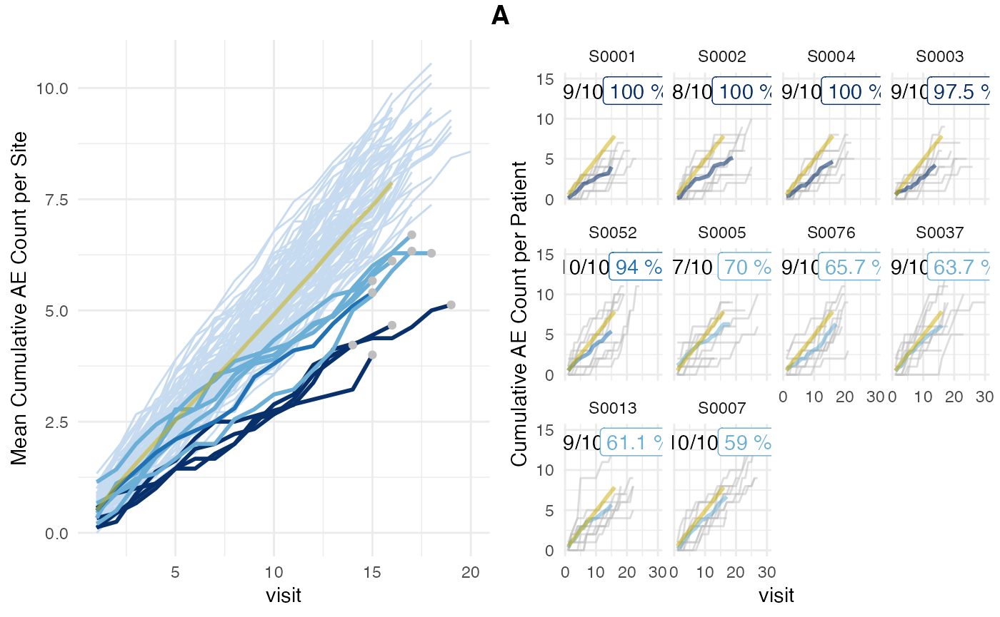

Introduction
With the latest 0.6.0 release we have added an
alternative version of the {simaerep} algorithm that was coded using
solely dbplyr compatible table operations.
- expand the patients for each site
rtimes - join each patient with a random eligible patient from same study
- for each replicate calculate event per visit rate per site
- calculate the ratio of having a lower event per visit rate than actually observed
This comes with the following advantages and disadvantages:
- Patients are individually matched with patients that have reached the same visit in the study. No need to pick visit_med75 as an evaluation point.
-
dbplyrcompatibility means that code execution can be done in a database back-end as opposed to in-memory. - Matching patients individually is more costly, this increases in-memory computation time
- Limited patient sample pool for patients that have more visits than other patients in study.
Sample Data
set.seed(1)
df_visit <- sim_test_data_study(
n_pat = 1000, # number of patients in study
n_sites = 100, # number of sites in study
frac_site_with_ur = 0.05, # fraction of sites under-reporting
ur_rate = 0.4, # rate of under-reporting
ae_per_visit_mean = 0.5 # mean AE per patient visit
)
df_visit$study_id <- "A"Patient-Level Matching
Here we use the standard version of the algorithm.
To use the patient-level matching algorithm we set
inframe=TRUE and visit_med75=FALSE.
The original algorithm uses fixed seeds before sampling while the inframe method does not. In order to obtain consistent results we need to manually set a seed.
The plot shows that for all sites 10/10 patients were used and none were excluded. We also observe that the site average has become more noisy as less patients are used to calculate the averages for the higher visit numbers.
plot(aerep_inframe)The inframe method includes this noisier data but does not compare
average event counts but event per visit rates. We can find
events_per_visit_site and
events_per_visit_study in df_eval. The latter
is the average event rate obtained in the simulation in which each
patient has been resampled according to its maximum visit.
aerep_inframe$df_eval## # A tibble: 100 × 10
## study_id site_number events_per_visit_site events visits n_pat prob_low
## <chr> <chr> <dbl> <dbl> <dbl> <int> <dbl>
## 1 A S0001 0.279 50 179 10 0
## 2 A S0002 0.281 59 210 10 0
## 3 A S0003 0.291 55 189 10 0
## 4 A S0004 0.312 59 189 10 0
## 5 A S0005 0.297 58 195 10 0
## 6 A S0006 0.493 100 203 10 0.569
## 7 A S0007 0.408 89 218 10 0.044
## 8 A S0008 0.559 95 170 10 0.922
## 9 A S0009 0.518 101 195 10 0.761
## 10 A S0010 0.470 87 185 10 0.385
## # ℹ 90 more rows
## # ℹ 3 more variables: events_per_visit_study <dbl>, prob_low_adj <dbl>,
## # prob_low_prob_ur <dbl>We can also force the inframe method to use the visit_med75 this will
prefilter df_visit, which adds an extra step and decreases
performance.
set.seed(1)
aerep_inframe_visit_med75 <- simaerep(
df_visit,
inframe = TRUE,
visit_med75 = TRUE
)
plot(aerep_inframe_visit_med75)
DB
We can demonstrate the database-backend compatibility by using a
connection to a in memory duckdb database. In order to set
the number of replications we need to create a new table in our back-end
that has one column with as many rows as the desired replications.
A lazy reference to this table can then be passed to the
r parameter.
con <- DBI::dbConnect(duckdb::duckdb(), dbdir = ":memory:")
df_r <- tibble(rep = seq(1, 1000))
dplyr::copy_to(con, df_visit, "visit")
dplyr::copy_to(con, df_r, "r")
tbl_visit <- tbl(con, "visit")
tbl_r <- tbl(con, "r")
aerep <- simaerep(tbl_visit, r = tbl_r, visit_med75 = FALSE)When inspecting df_eval we see that it is still a lazy
table object.
aerep$df_eval## # Source: SQL [?? x 10]
## # Database: DuckDB v1.0.0 [koneswab@Darwin 23.6.0:R 4.4.1/:memory:]
## # Ordered by: study_id, site_number
## study_id site_number events_per_visit_site events visits n_pat prob_low
## <chr> <chr> <dbl> <dbl> <dbl> <dbl> <dbl>
## 1 A S0040 0.477 95 199 10 0.43
## 2 A S0082 0.470 87 185 10 0.382
## 3 A S0084 0.513 101 197 10 0.698
## 4 A S0030 0.538 106 197 10 0.828
## 5 A S0037 0.429 85 198 10 0.143
## 6 A S0034 0.432 79 183 10 0.148
## 7 A S0095 0.452 80 177 10 0.255
## 8 A S0089 0.481 91 189 10 0.467
## 9 A S0031 0.49 98 200 10 0.527
## 10 A S0069 0.503 88 175 10 0.644
## # ℹ more rows
## # ℹ 3 more variables: events_per_visit_study <dbl>, prob_low_adj <dbl>,
## # prob_low_prob_ur <dbl>We can convert it to sql code. The cte option makes the
sql code more readable.
sql_eval <- dbplyr::sql_render(aerep$df_eval, sql_options = dbplyr::sql_options(cte = TRUE))
stringr::str_trunc(sql_eval, 500)## <SQL> WITH q01 AS (
## SELECT
## patnum,
## site_number,
## is_ur,
## max_visit_mean,
## max_visit_sd,
## ae_per_visit_mean,
## CAST(visit AS NUMERIC) AS visit,
## CAST(n_ae AS NUMERIC) AS n_ae,
## study_id
## FROM visit
## ),
## q02 AS (
## SELECT DISTINCT study_id, site_number
## FROM q01
## GROUP BY study_id, site_number, patnum
## ),
## q03 AS (
## SELECT study_id, site_number, patnum, MAX(visit) AS max_visit_per_pat
## FROM q01
## GROUP BY study_id, site_number, patnum
## ),
## q04 AS (
## SELECT DISTINCT study...We can take that code and wrap it in a CREATE TABLE
statement
## [1] 100Retrieve the new table from the database.
tbl_eval <- tbl(con, "eval")
tbl_eval## # Source: table<eval> [?? x 10]
## # Database: DuckDB v1.0.0 [koneswab@Darwin 23.6.0:R 4.4.1/:memory:]
## study_id site_number events_per_visit_site events visits n_pat prob_low
## <chr> <chr> <dbl> <dbl> <dbl> <dbl> <dbl>
## 1 A S0039 0.472 92 195 10 0.389
## 2 A S0010 0.470 87 185 10 0.385
## 3 A S0024 0.495 91 184 10 0.579
## 4 A S0014 0.505 103 204 10 0.629
## 5 A S0043 0.503 91 181 10 0.629
## 6 A S0036 0.506 89 176 10 0.666
## 7 A S0067 0.428 83 194 10 0.127
## 8 A S0019 0.448 74 165 10 0.256
## 9 A S0042 0.470 85 181 10 0.379
## 10 A S0094 0.469 99 211 10 0.379
## # ℹ more rows
## # ℹ 3 more variables: events_per_visit_study <dbl>, prob_low_adj <dbl>,
## # prob_low_prob_ur <dbl>We plot the results from the {simaerep} object.
plot(aerep)Or more efficiently by using plot_study() when we have
already written the simaerep results into the database.
Here we avoid that the results are being recalculated just for the sake
of creating a plot. However this requires that we save
df_site to the database as well.
sql_site <- dbplyr::sql_render(aerep$df_site)
DBI::dbExecute(con, glue::glue("CREATE TABLE site AS ({sql_site})"))## [1] 100
tbl_site <- tbl(con, "site")
plot_study(tbl_visit, tbl_site, tbl_eval, study = "A")
DBI::dbDisconnect(con)In Memory Calculation Times
Here we perform some examplary tests to illustrate the increase in-memory calculation time of the inframe calculation method.
This is the calculation time for the default settings
system.time({simaerep(df_visit, inframe = FALSE, visit_med75 = TRUE, under_only = TRUE, progress = FALSE)})## user system elapsed
## 0.793 0.010 0.802inframe calculation time is higher
system.time({simaerep(df_visit, inframe = TRUE, visit_med75 = FALSE, under_only = TRUE)})## user system elapsed
## 1.968 0.044 2.013